1. Tutorial 1
1.1. Purpose
The purpose of this first tutorial is to understand the most basic functionalities of the Geospatial Microplanning Toolkit (GMT). No previous knowledge of this application is required.
To achieve this, the following is introduced:
Access GMT
Login / Access to data
Familiarize yourself with the dashboard
Obtain the data to do the microplanning
Review the health facility list, do minor modifications
Review the settlement list, do minor modifications
Perform the microplanning
Review the microplan
Sync changes back to the database
Print the microplan
Note: “clicking” in this guide can be substituted by “tapping” as well - for instance if you are working on a tablet.
1.2. Let’s Get Started!
1.2.1. Access GMT
For the training, in a browser, ideally Google Chrome, navigate to
Note that this is the URL to do only the training.
Once you are in the field doing the real microplans, the URL you should use is:
You should see the following:
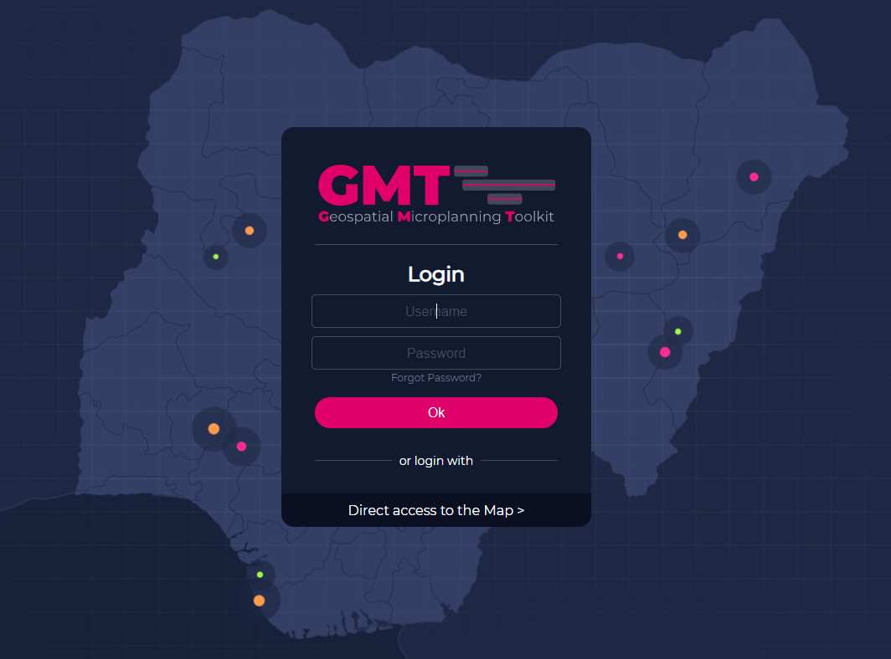
1.2.2. Login / Access to data
If you would just like to consult the data and you have no intention to edit, you can simply choose “Direct access to the Map” and you will be directed to choose which module you would like to consult.
If you would like to do any editing, you should provide your credentials here. You will be redirected to choose which microplanning module you would like to consult.
Note
If you are working on a tablet, you should be adding the application to the tablet instead.
Follow the steps shown below to do so:
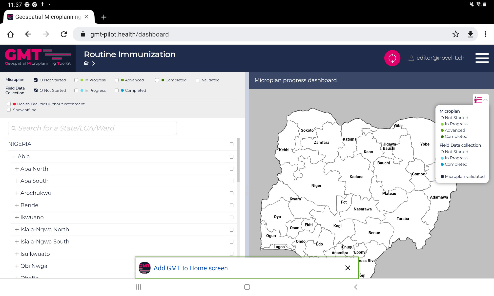
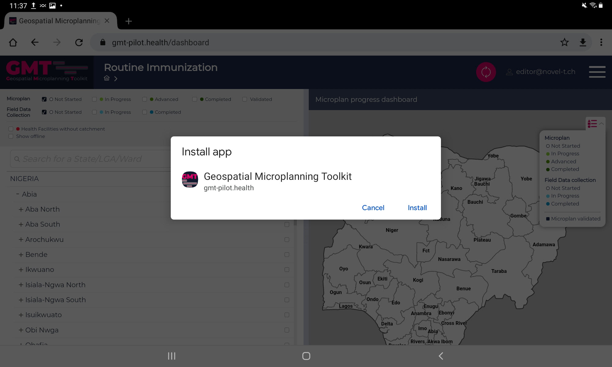
If you closed the dialog without clicking on install, you can alternatively use the 3-dot menu in Google Chrome. Click on it and select “Install App”.
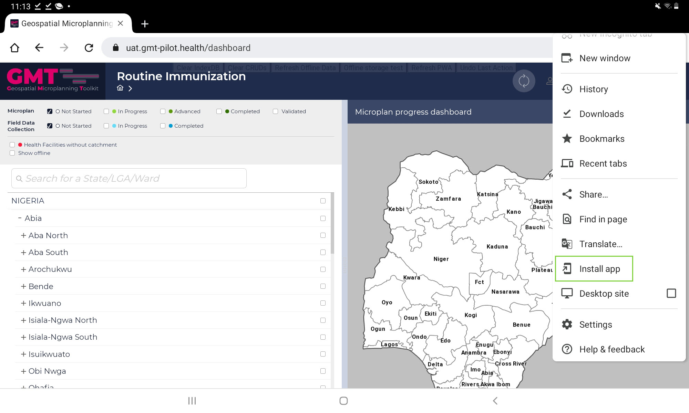
In either case, you should now see the app icon in your applications:
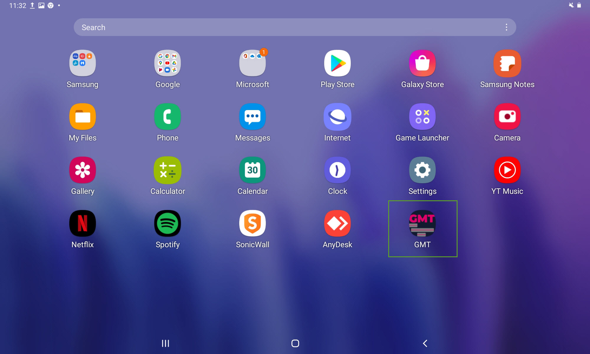
You should also install the documentation app to have it available offline. With the Chrome Browser, navigate to the help:
https://api-uat.gmt-pilot.health/help/index.html
Similarly to the above, you are either prompted directly to install the app, or else you can install it via the 3-dot menu from Chrome:
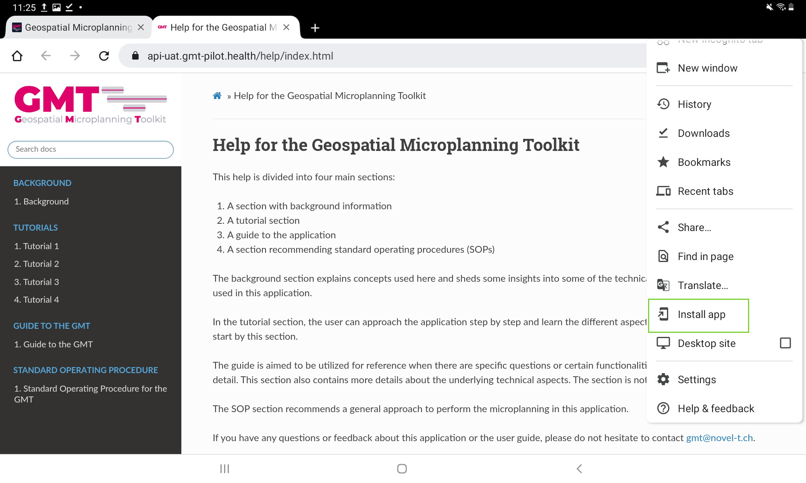
After this, you should see both the app for GMT and the app for the help:
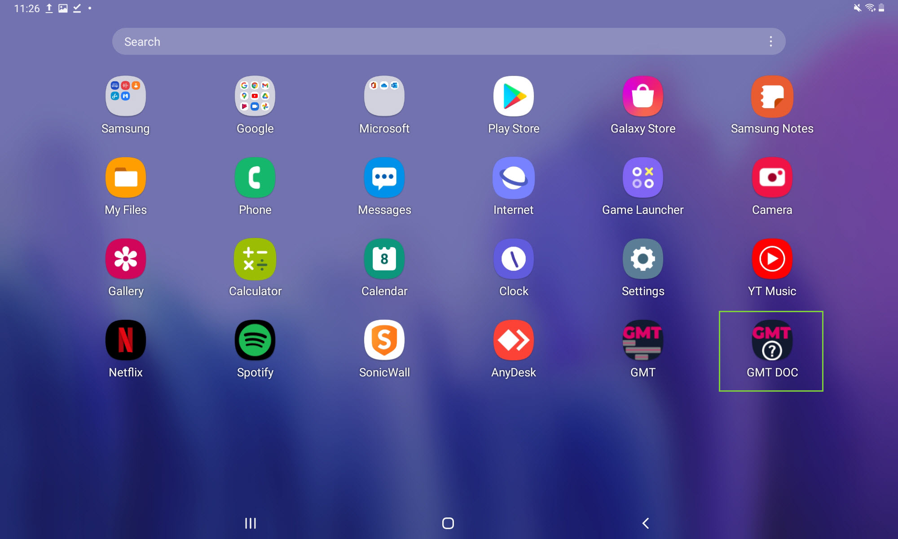
You can close Chrome and continue from the application. Make sure you have the right application installed. This is the case if you can see the version of the application on the bottom left:
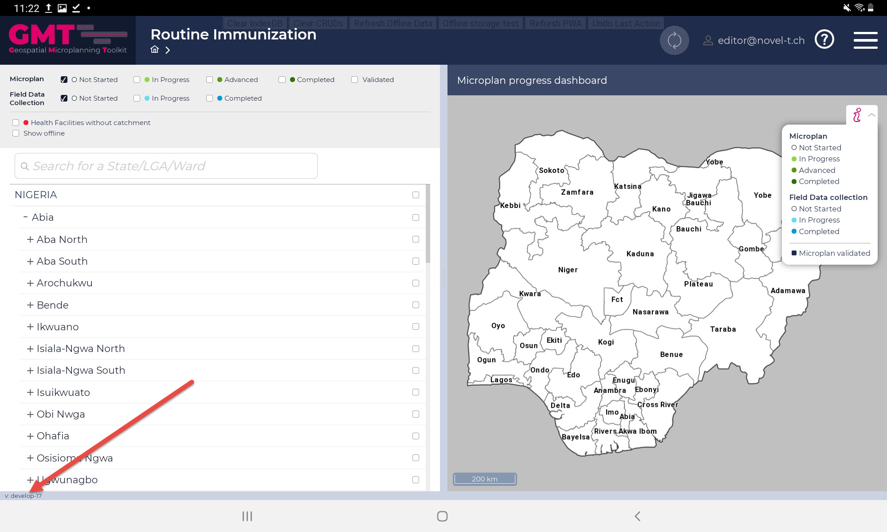
Choose “Routine Immunization” - you will be redirected to the dashboard. We will focus on a microplan for an activity where the target population will correspond to 5% of the total population.
{kind=link}
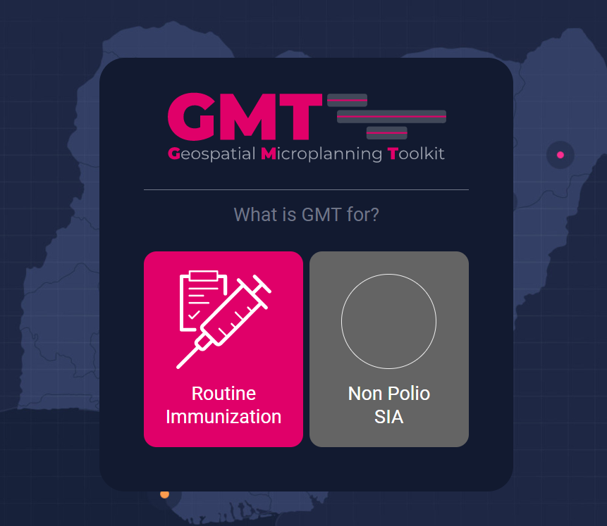
1.2.3. Dashboard and taking data offline
You will note that you are logged in when your email address shows on the top right.
On the dashboard, you will be able to navigate to the wards of your interest. You can use the map to navigate by clicking on the areas of interest to you, alternatively use the list on the left or else the search.
We will be assuming the role of a ward focal person in “Amuzi”, a Ward located in LGA “Ahiazu-Mbaise” in the State “Imo”.
Let’s use the search: type “ahiaz” in the search bar.
You should see:
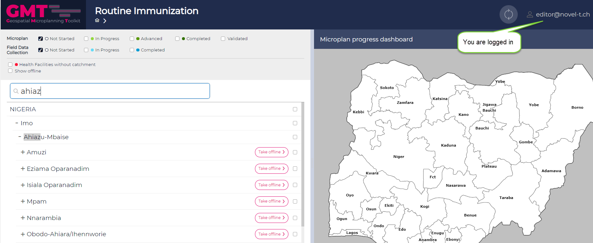
Click on the name “Amuzi” - note how the list and map change. On the list, note that there is one health facility listed for this Ward. Click on a “+” next to another Ward to see the health facilities for that respective Ward.
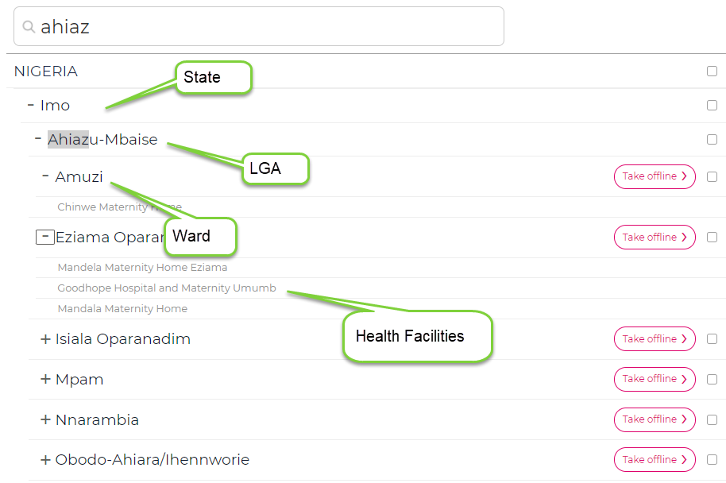
We will be conducting microplanning in the field where there may not be any connectivity. Thus, the application is designed to work also offline. Accordingly, we will need to take the data for this Ward offline to be able to see or edit the microplan. For that, click on the “Take Offline” button. Once the data has been downloaded, you will be able to see a green tickmark indicating that this data is available.
By clicking on the “Show offline” tickbox, you can see what data is available for editing. In your case, you should only see Ward Amuzi now.
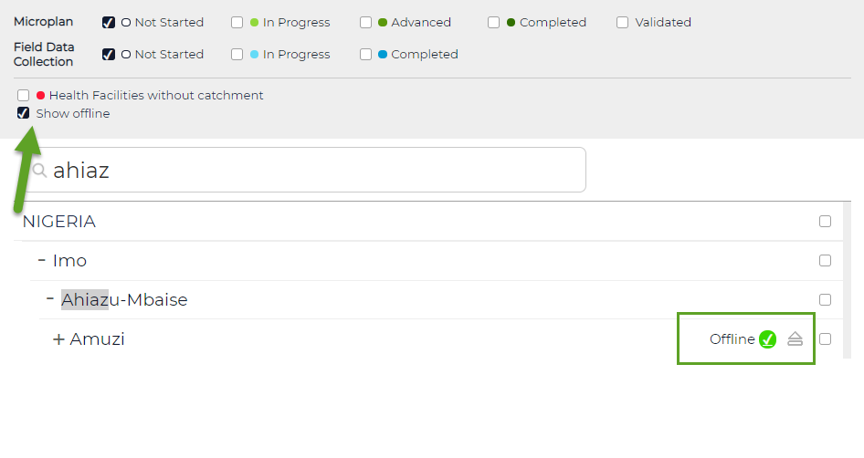
Click now on the the name “Amuzi” to enter the microplanning screen.
1.2.4. Review the Health Facility list
You will be guided through the interface step by step. Let’s start with the health facility list. The current interface has a list on the right and a map on the left.
Note
The global “Edit” button at the top is toggled on per default when you are logged in. If you don’t plan to do any edits, you can toggle this button off to avoid changing any data inadvertently.
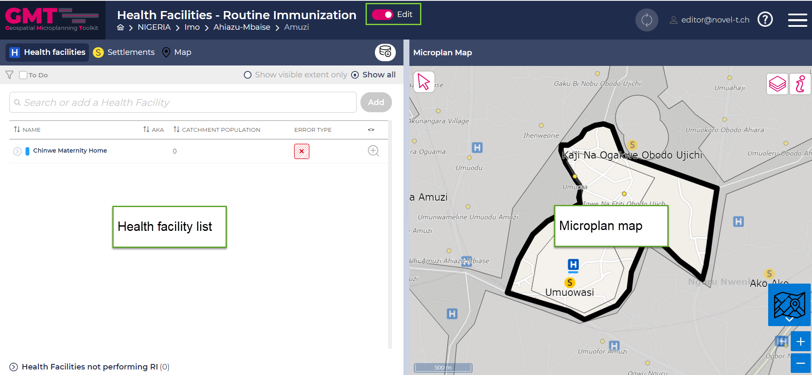
In the first step you should review the health facility list.
Hint
Our goal is to identify all health facilities in the current ward that we need to consider for microplanning. We also need to make sure they are at the right place and they have the right name.
In this Ward, there is one health facility as shown in the health facility list.
Note
Note the following:
The color next to the health facility indicates the color the health facility label has on your microplan map.
AKA stands for “Also Known As”, in this case potential other names for that same health facility. We will see this later.
Catchment population is currently 0 - we have not defined catchments yet. We will see this later.
Health facilities can have error icons listed under the “Error type” column.
Since this health facility has not been assigned any settlement at this point, it shows an error at the moment”:
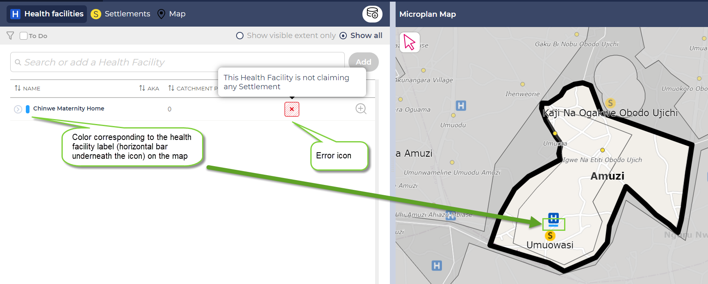
We can access all information about this health facility by either clicking on the health facility on the map or clicking on the name of the health facility on the list. Do either of those two to access the health facility tab.
Note that the health facilities are depicted with the following icon on the map:
{kind=link}
1.2.4.1. Health Facility details
You landed on the “Catchment” tab. We will look at this later. Instead, click on “Details”.
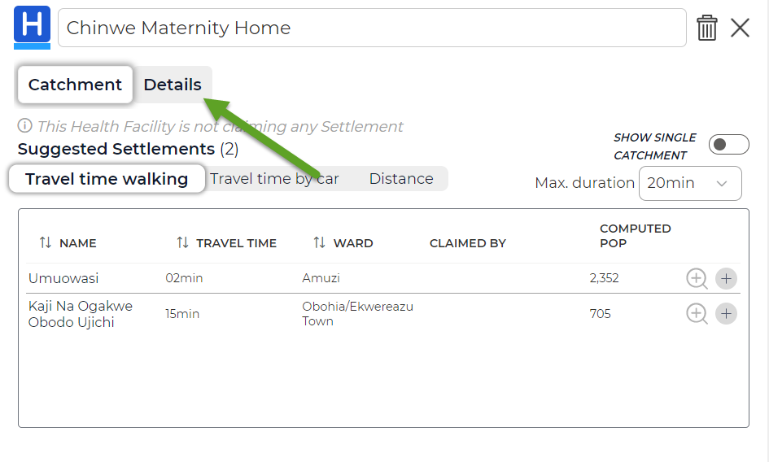
On the top, you will see the name of the health facility. Click in the name field directly to change the name. As an example, rename this health facility to “Test Facility”.
Note: If you are on https://gmt-pilot.health and you have connectivity, the “Sync” icon at the top now changed from being inactive to being active. This indicates that you have pending changes. We will get back to this later. This does not apply if you are on https://uat.gmt-pilot.health.
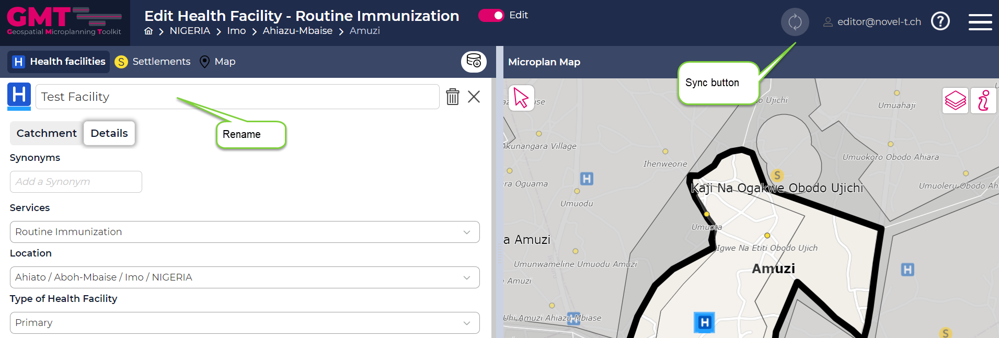
In the details page you have the option to add other information related to the health facility. For now, let’s assume we are done with that. We will cover these items in another tutorial.
Navigate back to the health facility list by closing the window. Note that the name of the health facility changed in the list:
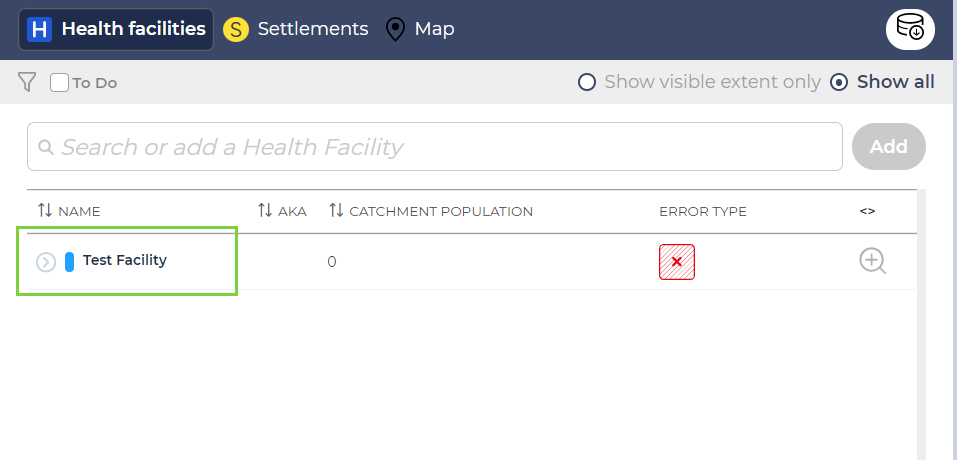
1.2.4.2. Health Facility deletion and addition
Next, let’s assume that “Test Facility” is in fact no longer there and there is another health facility that we are currently missing.
First, delete “Test Facility” by clicking on the bin icon and confirming the deletion.
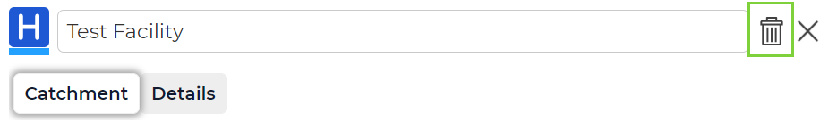
To create a new health facility, click in the search bar and type the name of the facility you would like to add. Click on “Add”.
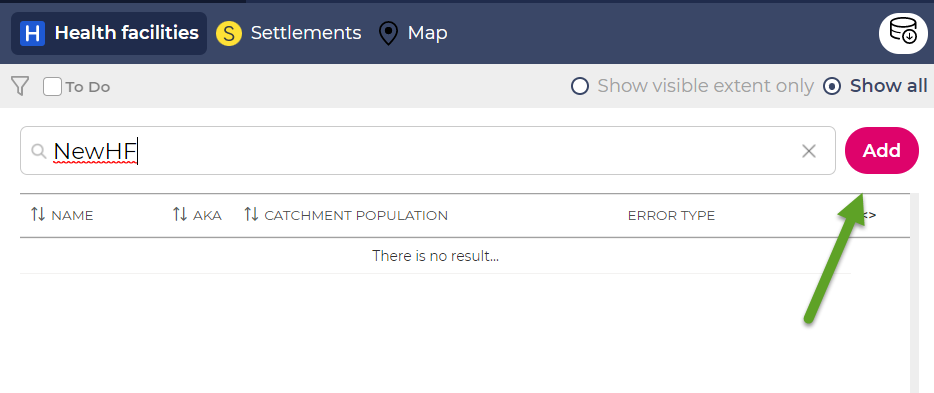
Select “Pin” and click on the map to indicate the location of the health facility. If the position is correct, click on “Create”.
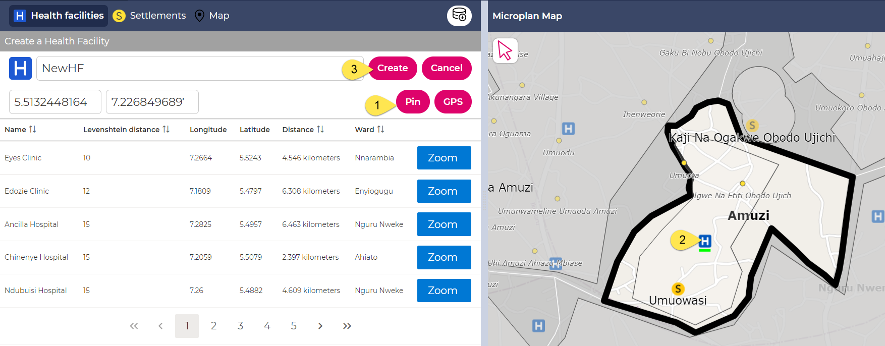
The health facility has been added now and is visible in the health facility list.
Hint
We reached our first goal: at this step, we imagine the health facility list for this Ward is complete - all health facilities we need to consider for this Ward are on the list.
1.2.5. Review the Settlement list
What are we referring to when we say “settlement”? It is a place that health workers refer to where they are planning routine immunization activities.
Hint
Next, our goal is to identify all settlements in the current ward that we need to consider for microplanning. We need to make sure they are at the right place and that they have the right name.
To do this, we will look at the settlement list. Click on the “Settlements” button.
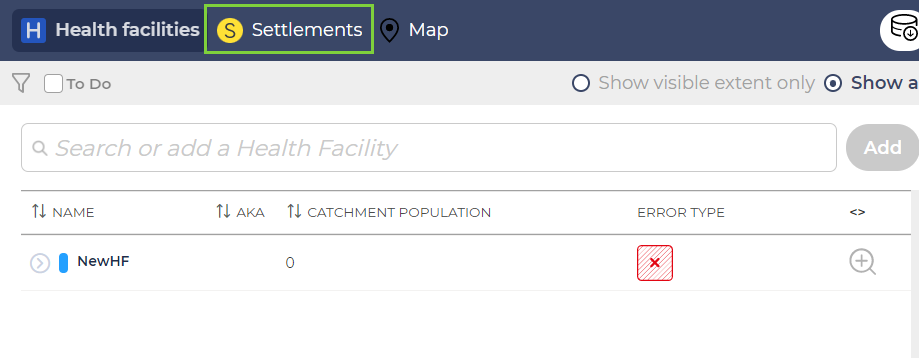
Note
There are similarities to the health facility list:
AKA stands for “Also Known As”, in this case potential other names for that settlement. We will see this later.
Settlements can have error icons listed under the “Error type” column.
Each settlement has a calculated population value, coming from a population model. We can add a field estimate to a settlement, as we will see shortly.
Since this settlement has not been assigned to a health facility, it shows the error icon “Unclaimed”:
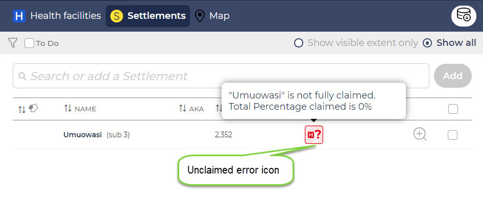
We can access all information about this settlement by either clicking on the settlement on the map or clicking on the name of the settlement on the list. Do either of those two to access the settlement tab. Note that the settlements are depicted with the following icon on the map:
{kind=link}
1.2.5.1. Settlement details
You landed on the “Catchment” tab. We will look at this later. Instead, click on “Details”.
On the top, you will see the name of the settlement. Similar to what we saw for the health facility, we can click in the name field directly to change the name. Let’s assume that there was a typo for this settlement and correct it to “Umowasi”.
For our example, we will consider that we know the actual population of this settlement. We have the possibility to add this information here. Enter the field estimated population in the corresponding field - enter 3500.
If you wonder where the computed population comes from, this is explained in Population.
Let’s also assume that this settlement is a Polio high-risk settlement - we can add this information here as well.
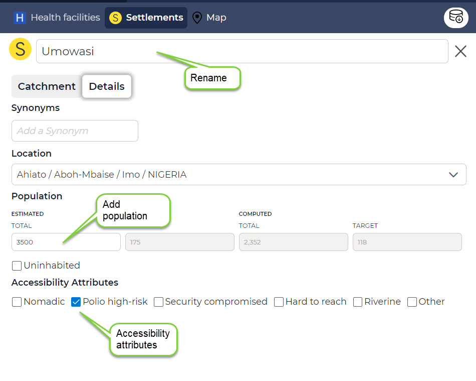
Close the settlement tab and note that the settlement name has been corrected and the field estimated population has replaced the computed population that was shown before.
Hint
We reached our second goal: at this step, we imagine the settlement list for this Ward is complete - all settlements we need to consider for this Ward are on the list.
1.2.6. Perform Microplanning
Navigate back to the health facility tab. Click the health facility on the list to enter the “Catchment” information for the health facility.
Note that currently there are no included settlements in the catchment of this health facility.
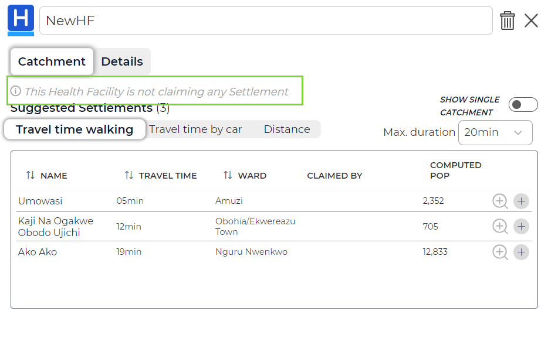
Below, you see the suggested settlements for this health facility. We would like to add the settlement that is closest to the health facility. Thus, click on “Distance” and sort the table by distance.
We can see that our settlement is the closest to this health facility. We can double check that it’s the correct settlement by clicking on the magnifying glass. Having verified that, let’s add it to the health facility catchment using the “+” icon.
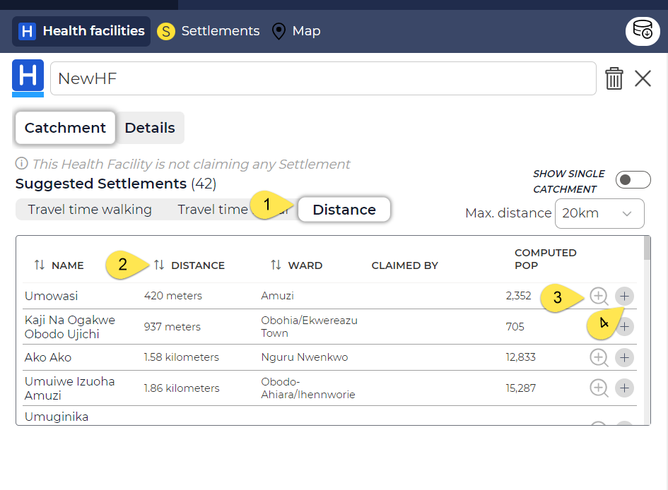
Note
This resulted in a few things:
The settlement has been added to the list of “Included Settlements”.
You could remove it from this list again by clicking on the “x”.
The map on the right shows the delineation of the catchment for this health facility.
The color of the catchment on the map corresponds to the color of the health facility.
The pattern of the catchment is explained in the legend.
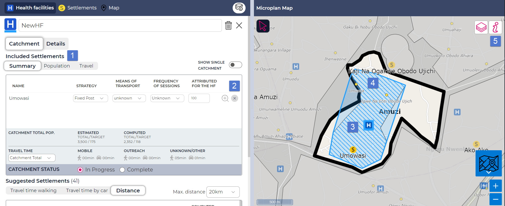
Let’s take a closer look at the “Included Settlements” now.
1.2.6.1. Included Settlements
Let’s first review the intervention strategy for our settlement. We have the options “Unknown”, “Fixed-Post”, “Outreach” and “Mobile”. Try to assign different strategies for your settlement. Note that with each change, the pattern for the catchment on the map changes to reflect that. The default strategy that is chosen when adding a settlement always corresponds its distance from the health facility. Meaning that if a settlement is within 2km, the default strategy is “Fixed-Post”, if it’s between 2-5km the default strategy is “Outreach” and if it’s above 5km it is “Mobile”.
For “Fixed-Post” strategy:
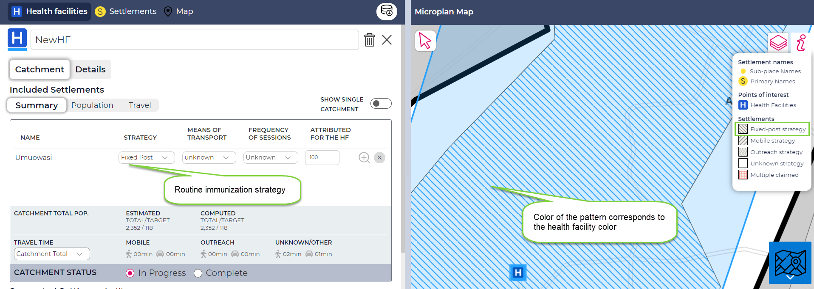
For “Outreach” strategy:
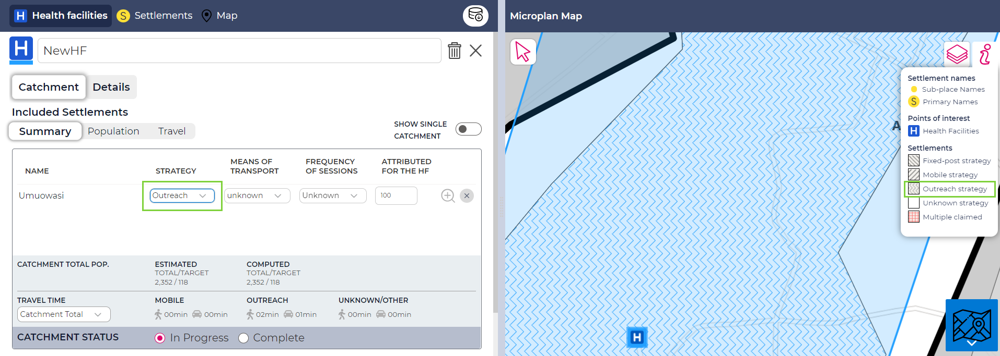
For “Mobile” strategy:
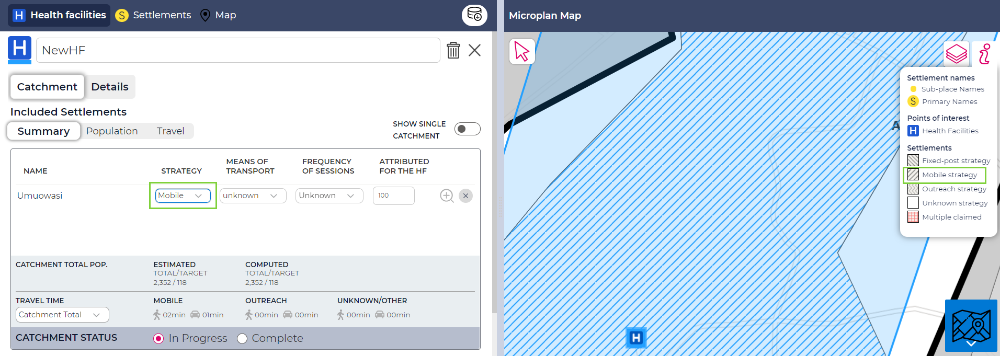
Since this settlement is within 2km of our health facility, let’s assign it the “Fixed-Post” strategy.
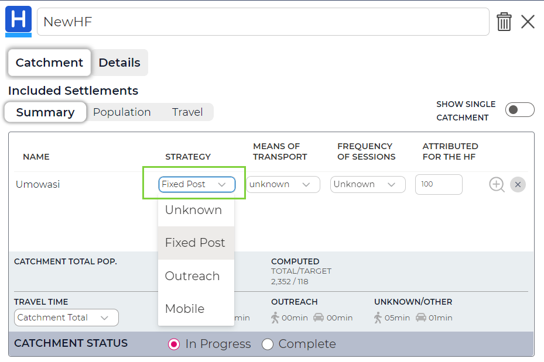
The catchment total population of this health facility is summarized and corresponds to the target population of the settlements assigned to this health facility. For now this was fixed at 5% of the total population for the settlement in our catchment. In the future, this will be a parameter that can be defined. Let’s not worry about the other columns for now - we will look at this later.
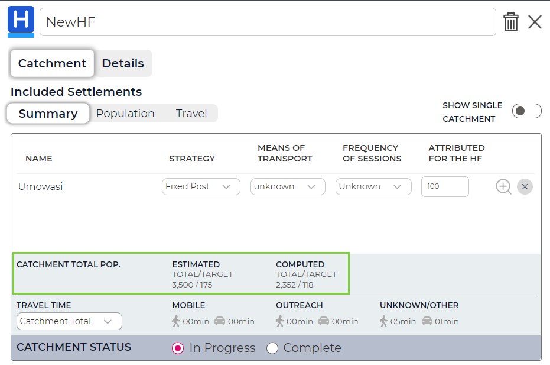
Note that in the “Population” and “Travel” tabs you will find some more information about the settlement. We will not go into further detail here.
Hint
We reached our third goal: we assigned the settlement to our health facility.
1.2.7. Review Microplanning
Hint
Our next goal will be to review the microplan.
Navigate back to the health facility list by either clicking on “Health Facilities” or else clicking on the “x”.
Note that the error icon has disappeared, since we have added a settlement to the catchment of this health facility. Additionally, the catchment population for this health facility now shows 3500 - the population we have entered for the settlement. If you click on the arrow next to the health facility, you can see what settlement is part of the catchment.
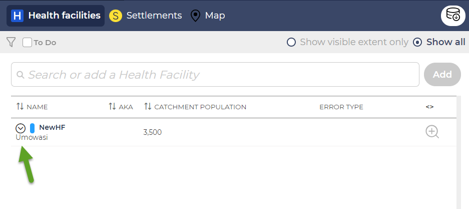
If you navigate to the settlements list, you will also see that the error icon for the settlement has disappeared, since the settlement has been added to a health facility.
Hint
We reached our fourth goal: We reviewed the health facility and settlement list, we reviewed the catchments and our microplan is complete.
1.2.7.1. Mark health facility catchment as complete
Since we are now happy with our microplan for this health facility (and in this case that also means for this Ward, since there is only one health facility), we will mark it as complete.
Navigate to the health facility catchment tab. Mark the health facility catchment status as complete.
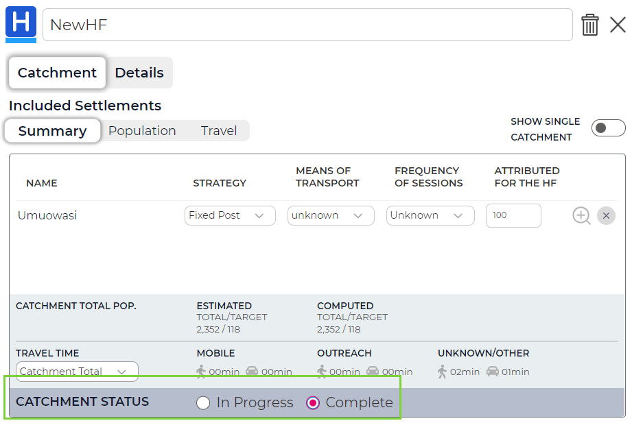
1.2.8. Synchronize the changes back to the server
Hint
Our next goal is to synchronize our changes back to the server. This section is only relevant if you are on https://gmt-pilot.health. It will not work for https://uat.gmt-pilot.health. Read the section nevertheless.
Warning
All of the current work has been saved in our browser locally. If we were to lose our device, those changes would be lost at the current stage. In order to update the GMT database with our changes, we will have to establish connectivity and synchronize our changes back with the server.
First, establish connectivity. To synchronize the changes, there are two ways.
We could already click on the “Sync” button, which will directly synchronize all changes on the device. Let’s hold off and first navigate back to the dashboard using the menu at the top. Click on “Ahiazu-Mbaise”.
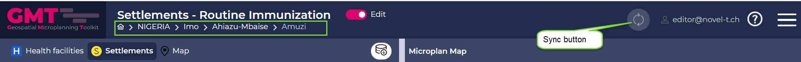
Using the “Show offline” filter, you will see that our Ward has been modified. Let’s click that “Sync” button now.
Hint
We reached our fifth goal: synchronization has been achieved. Only one step left to finalize this tutorial.
1.2.9. Print the PDF of the microplan
Hint
Our final goal for this first tutorial is the printing of the PDF.
To obtain a printable PDF of the microplan for this ward, we can simply select the checkbox next to our ward and click on the corresponding “Print” icon at the top.
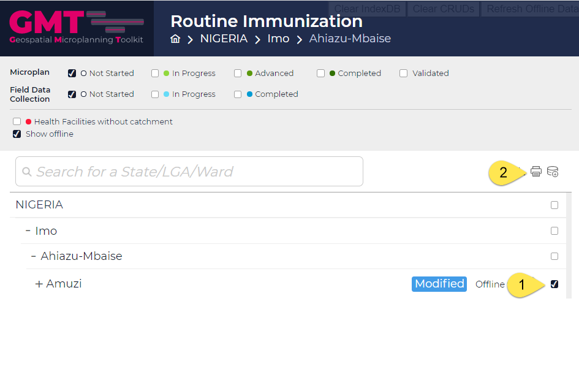
You will have several options. If you print several Wards at the same time, you can choose to just have one PDF file per Ward (otherwise, it will generate one PDF containing the data for all Wards). You can also choose to print a detail page per Health Facility. For our purpose, since we just have one Ward anyway that we are working on, let’s just select the last option “Include one detailed page per Health Facility”. You can ignore the other options for now.
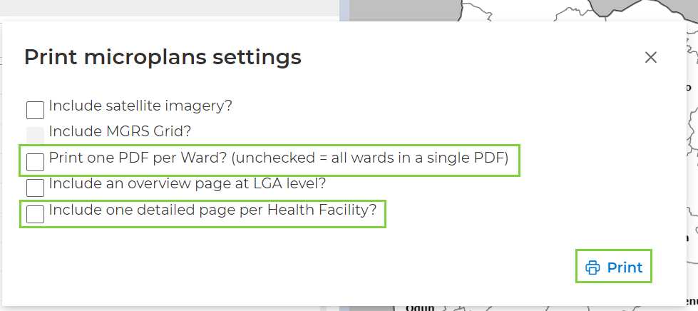
The PDF will be generated automatically.
Important
You reached the end of Tutorial 1!